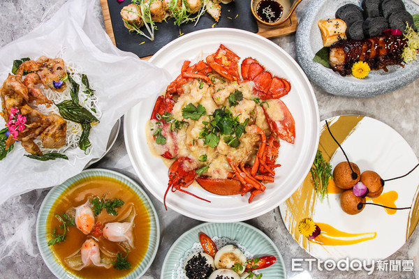

台北松江南京商圈又有新餐廳開幕了！結合了港式點心、
創意中菜和消夜餐酒館等多重定位的「玖尹Royal Joying Soirée」在12月2日起試營運，
並且邀到前台灣添好運行政總主廚李一龍坐鎮，澳門巴黎軒行政總廚曾祺輝擔任顧問，
二人聯手將港點升級精緻化，端出黃燜湯金魚餃、黑松露流沙芝麻球、龍蝦腸粉等餐點。
「玖尹Royal Joying Soirée」董事長顏瓊姿出生於台灣早期五大家族之一的「基隆顏家」，
夫婿為老爺酒店集團副董事長廖年祈先生，顏小姐因此也身兼老爺酒店集團司董事，
台北市中山區伊通公園旁的「Royal Petite Garden老爺・小花園」(以下簡稱老爺小花園)為
顏瓊姿個人首度跨足經營飲料與餐食品質並重的複合式咖啡餐廳。
